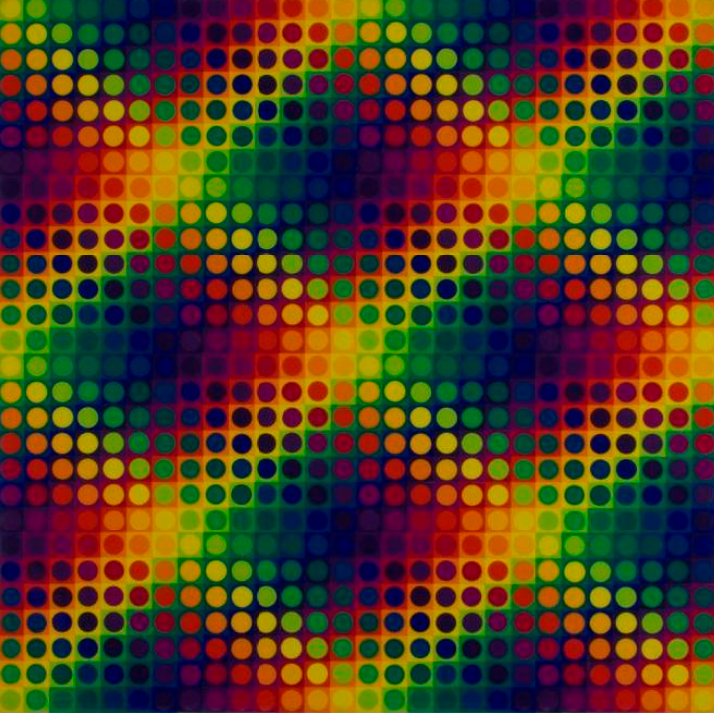
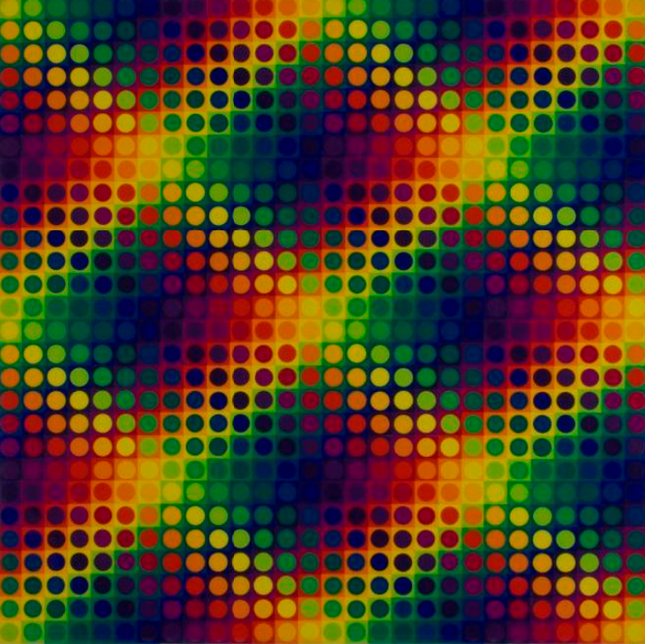

Galeria
El color
Comencé mis experiencias con el color en 1959, teniendo cuidado de no hacer colorismo. Apliqué al color el mismo trato que a las formas. Si trabajaba en el color, no era de ninguna manera para hacer un cuadro en azul, en rosa, cálido, frío. etc. Comencé por utilizar no algunos colores, sino todos. Compuse una gama completa que iba del amarillo al amarillo, pasando por el verde, el azul, el violeta, el rojo y el naranja. Los colores eran puros, no estaban degradados ni con negro ni con blanco. Me prohibía emplear otros colores que aquellos elegidos, es decir, una gama de catorce colores que, si bien limitados, me parecían resumir todas las variaciones posibles de mezclas cromáticas.
Julio Le Parc Op Art N#2

Série 14 - 2 Cercles fractionnés, 1970-2017
acrylique sur toile, 200 x 200 cm
Série 14 - 2 Cercles fractionnés, 1970-2017
acrylique sur toile, 200 x 200 cm

Série 14 - 2 Cercles fractionnés, 1970-2017
acrylique sur toile, 200 x 200 cm
 

Fascinación por la calidad
En todas estas experiencias, lo que me impresionaba era la cantidad de cambios posibles contenidos en cada programación. Me daba gusto imaginar todas esas variaciones sucediéndose en el tiempo y mis cálculos de probabilidades me llevaban a considerar otro fenómeno: la duración indeterminada. Cada gouache o cuadro producido por tal o cual combinación era, para mí, un momento particular de todo ese movimiento de colores en cambio continuo que rodaba en mi cabeza. Luego, ya al fin de 1959, me puse a imaginar mecanismos para poner en evidencia ese potencial de variaciones. El movimiento real aparece en mis experiencias, la multiplicación de imágenes, la transparencia, el color en el espacio, la luz... Todas esas investigaciones realizadas hace doce años, las he revisado, ordenado, ampliado, les he dado una mejor forma, más legibles, para presentarlas hoy.